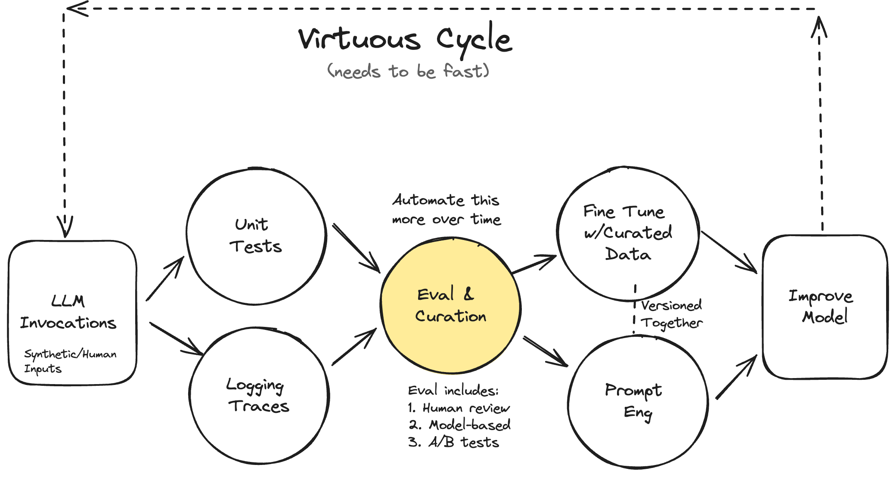

Having proved to ourselves that our objectives are achievable, we are now ready to begin building out an evaluation pipeline to quantifiably measure our progress as we develop our LLM powered app. Such a system is a remedy for the mere anecodtal assessments that are unreliable, subjective, impossible to track over time, and sadly what many folks settle for. With an “evals first” mindset, we can systematically inspect our data, know exactly where things are going well or not, and build some intuition about where we should concentrate our efforts. Good evals also serve as a foundation for curating datasets that can be used in both building better evals and fine tuning.
Author
Wayde Gilliam
Published
July 27, 2024
Iterating Quickly
Two recurring themes from the workshop are “look at your data (alot)” and iterate quickly. When building AI powered applications, we will need three things in place to make both a reality.

A mechanism to evaluate performance.
A mechanism to look at our data and see where things are working well or not so well (overall and by example).
The ability to make modifications to our system and measure how well they improved things or not.
The ability to curate datasets that can be used for better evals and fine tuning.
So having prototyed our tool calling application with off the shelf models, the recommendation is to get going in building such a mechanism with the inclusion of “simple tests and assertions.” Hamel calls these tests “L1 Evals” (e.g., Level 1: Unit Tests) and describes them like this in his blog post, “Your AI Product Needs Evals”:
Unit tests for LLMs are assertions (like you would write in pytest). Unlike typical unit tests, you want to organize these assertions for use in places beyond unit tests, such as data cleaning and automatic retries (using the assertion error to course-correct) during model inference. The important part is that these assertions should run fast and cheaply as you develop your application so that you can run them every time your code changes.
In the case of our tool calling project here, these may take the form of scoring functions that verify the model returns JSON, calls all the tools expected, and doesn’t generate any errors.
To begin with, what makes for a “great” eval and how do great evals allow us to “look at our data” and iterate with speed?
What is a “Great Eval”?
I really liked the definition Ankur Goyal’s provided in his conference talk on doing LLM Eval For Text2SQL. He says that a “great eval” is comprised of three componnents:
Some data to act on
A task to perform with that data (e.g., “I want you to take some input and generate some output”)
One or more scoring functions that measure how well your task did the job
The anatomy of a great eval
Why you should eval?
Ankur provides 4 key reasons:
To understand whether an update you made is an improvement or a regression (is it easy to figure this out?)
Drill down into good or bad examples (is it easy to get at them?)
Diff specific examples vs. prior runs (is it easy to see how your current evals did against your last evals?)
Avoid playing whack-a-mole (can you easily track and know what you broke and/or fixed as you develop)
So as we iterate through our evaluation pipeline, that’s what we’ll do. At each step we’ll grab some data, define a task, and configure a number of scoring functions. It’s really that simple. That is an “eval.”
But before we get to that, what exaclty is an “L1” eval?
Level 1: Unit Tests (L1 Evals)
From the blog post mentioned above, we can infer some things about these particular evals.
Each should test a specific feature or scenario (e.g., the model called all the tools we expected).
They can also be general tests that aren’t specific to any feature or scenario (e.g., the model returns valid JSON).
You can use an LLM to synthetically generate inputs for these evals if necessary (see here for an exmaple)
You need to be able to track the results of these tests over time.
You will continuously update these evals
As you observe new failures, you should update your evals to capture those use cases. “You must constantly update these tests as you observe data through human evaluation and debugging. The key is to make these as challenging as possible while representing users’ interactions with the system.”
And remember this very important advice on interpreting the worthiness of your evals …
The pass rate is a product decision
“One signal you are writing good tests and assertions is when the model struggles to pass them - these failure modes become problems you can solve with techniques like fine-tuning later on … unlike traditional unit tests, you don’t necessarily need a 100% pass rate. Your pass rate is a product decision, depending on the failures you are willing to tolerate.”
Lucky for us there is a really great tool that does all of this. It’s called Braintrust and it’s awesome! Before we get to it, we need to prepare a dataset to generate some predictions from.
Eval Preparation
Before we start eval’ng, we need to define our tools and a few methods for building a dataset we can pipe into Braintrust to get some initial feedback.
Important
At this stage it’s important to note that we don’t have any “targets” or “expected” outputs to measure our “outputs” by. As this is where we really want to get too, we’ll use these iteration to build up such a dataset one experiment at at time.
Tools
These are the same tools you saw in the previous post. As we build our our eval pipeline, we’ll get a better idea of how we might alter the definitions of these tools to improve performance. But since our “vibe check” passed, we’ll start with what we know already seems to work pretty well.
Pydantic classes for the core tools we want to use in evals
# Translationclass TranslationTask(BaseModel):"""Determine the original language the document is written in and translate it into English. This tool should be used anytime the user provides a non-English document. """ english_translation: str= Field( ..., description="The text translated into English", ) source_language: str= Field( ..., description="The language of the original text (e.g., English, Spanish, French, Chinese, German, etc.)", )# Document summarizationclass DocumentSummaryTask(BaseModel):"""Provide a short summary of the document and any broad themes. This tool should be used anytime the user asks to summarize a document or identify the high-level themes in a single document. """ summary: str= Field( ..., description="A concise, one-sentence summary of the document", ) themes: list[str] |None= Field( ..., description="A list of up to 5 concise themes, each 1 to 3 words long", max_items=5, )class NamedEntityType(str, Enum):"""Valid types of named entities to extract.""" PERSON ="PERSON" NORP ="NORP" FAC ="FAC" ORG ="ORG" GPE ="GPE" LOC ="LOC" PRODUCT ="PRODUCT" EVENT ="EVENT" WORK_OF_ART ="WORK_OF_ART" LAW ="LAW" LANGUAGE ="LANGUAGE" DATE ="DATE" TIME ="TIME" PERCENT ="PERCENT" MONEY ="MONEY" QUANTITY ="QUANTITY" ORDINAL ="ORDINAL" CARDINAL ="CARDINAL" OTHER ="OTHER"class NamedEntity(BaseModel):"""A named entity result."""def convert_str_to_named_entity_type(v: str| NamedEntityType) -> NamedEntityType:"""Ensure entity type is a valid enum."""ifisinstance(v, NamedEntityType):return velse:try: match, score = fuzzy_process.extractOne( v.upper(), [e.value for e inlist(NamedEntityType)] )return NamedEntityType(match) if score >=60else NamedEntityType.OTHERexceptValueError:return NamedEntityType.OTHER entity_type: Annotated[str, BeforeValidator(convert_str_to_named_entity_type)] entity_mention: str= Field(..., description="The named entity recognized.")class DocumentNERTask(BaseModel):"""Extracts the named entities found in the document. This tool should be used anytime the user asks for named entity recognition (NER) or wants to identify named entities. """ named_entities: list[NamedEntity] = Field( ..., description=f"Perform Named Entity Recognition that finds the following entities: {', '.join([x.name for x in NamedEntityType])}", )# Sentimentclass DocumentSentimentTask(BaseModel):"""Information about the sentiments expressed in a document. This tool should be used anytime the user asks for sentiment analysis. """ positivity: int= Field( ..., description="How positive or negative is the author on a scale between 1 and 5 (1=Very Low, 2=Moerately Low, 3=Neutral, 4=Moderately Strong, 5=Very Strong)?", # noqa: E501 ge=1, le=5, ) positive_statements: list[str] = Field( ..., description="A list of the author's positive statements", ) negative_statements: list[str] = Field( ..., description="A list of the author's negative statements", ) has_suggestions: bool= Field( ..., description="Does the author make any suggestions?", ) suggestions: list[str] = Field( ..., description="A list of any suggestions the author makes", ) feels_threatened: bool= Field( ..., description="Does the author feel fearful, harmed, intimidated, harassased, discriminated against, or threatened in any way?", ) feels_threatened_examples: list[str] = Field( ..., description="A list of how and why the author feels physically/emotionally/mentally threatened, uncomfortable, harassaed", ) profanity: bool= Field( ..., description="Is there any profanity?", ) is_nonsense: bool= Field( ..., description="Is the text uninformative or only contain nonsense? Set to `True` if the document is it too short to be meaningful or only says something like 'N/A', 'None', 'I have nothing to add', 'No suggestions', or 'No comment'.", )# Topic summarizationclass TopicSummaryTask(BaseModel):"""Extract the theme and an action plan from a collection of related documents. This tool should be used anytime the user asks to identify the theme and an action plan and several documents are provided as context. """ theme_name: str= Field( ..., description="A concise, 5-10 word phrase representing the theme of the documents", ) action_plan: list[str] = Field( ..., description="A list of 3-5 specific actions derived from the documents", max_items=5, )
Dataset
We need to be able to build representative sampled datasets of various sizes at this stage. We want to create a varied set of examples each time we pull a subset of data, where each example has the following attributes:
A prompt to call one or more tools
The document(s) to act on as context
The number of tools we expect to be called
A list of the tools we expect to be called.
When building the “prompt” for each example, I randomly grab a task specific prompt for each tool that should be called and merge them all together to make up the final “prompt”.
Tip: Use an LLM for synthetic data generation
In retrospect, it probably would have been better if I had used an LLM to generate these prompts synthetically so as to make them more grammatically correct.
Anyhow, I’m not going to get into this step as its so use case specific. The code is posted below. Feel free to take a look (or not) for some inspiration on ideas you may be able to apply in your own work. As always, if you see improvements I could make … let me know. :)
Code to create evaluation datasets
# For each task/tool, I include a number of prompts I imagine a user might use to implore the AI to perform# that task. When I build the actually examples, I randomly grab a single item for each task that should# be called to build the final user promptexample_translation_asks = ["If the text below is not in English, translate it into English; otherwise, return the text as is","Translate the text below into English if it is not already in English; if it is, return it unchanged","If the provided text is in a language other than English, translate it to English; if it's already in English, return it without changes", # noqa: E501"Translate the following text to English if it is not written in English; otherwise, leave it unaltered","If the text below is not in English, convert it to English; if it is in English, return it without modification",]example_summarization_asks = ["Provide a short summary of the text below and identify any overarching themes","Summarize the document below and highlight any broad themes present","Create a concise summary of the following document and identify any general themes","Extract a brief 1-2 sentence summary from the text below and determine any broad themes","Summarize the text below in 1-2 sentences and identify any major themes within it",]example_ner_asks = ["Extract the named entities from the author's statement below","Determine the named entities in the document below","Identify the specific named entities in the statement below","Perform NER on the text below","Do NER on the document below",]example_sentiment_asks = ["Determine the sentiment expressed in the document below","Do sentiment analysis on the text below","Identify and classify the sentiments expressed in the following document","Perform sentiment analysis on the document below","Extract the sentiment from the document below",]example_theme_asks = ["Identify the theme in the documents below and create an action plan based on them","Determine the theme in the provided documents and develop an action plan accordingly","Extract the theme in the documents below and formulate an action plan based on your findings","Based on the documents provided, extract their theme and an action plan based on them","What is a good theme that describes the text below? Also include an action plan based on the provided documents",]# Given a list of tools to call and whether our context is a single document or a colleciton of documents,# this utility function does the work of coallesicing all the asks into a single human prompt. Note how# for "translation" tasks we sometimes ask for translation specifically and at other times we don't because# I hope that ultimately, the model can just see the text is not in English and do the translation task# without being specifically asked too.def build_hypothetical_prompt(tool_names, is_doc: bool=False):# Vary the overall format of the prompt for different styles by which a user may ask for# different tasksif random.choice([True, False]): queries = []for tool_name in tool_names:if tool_name =="TranslationTask":# Vary this being asked explicity so model can learn to call this tool whenver# it detects a non-English documentif random.choice([True, False]): queries.append(random.choice(example_translation_asks))elif tool_name =="DocumentSummaryTask": queries.append(random.choice(example_summarization_asks))elif tool_name =="DocumentNERTask": queries.append(random.choice(example_ner_asks))elif tool_name =="DocumentSentimentTask": queries.append(random.choice(example_sentiment_asks))elif tool_name =="TopicSummaryTask": queries.append(random.choice(example_theme_asks)) prompt = queries[0]for q in queries[1:]: prompt +=f". {q}"else: tasks = []for tool_name in tool_names:if tool_name =="DocumentSummaryTask": tasks.append("summarization")elif tool_name =="DocumentNERTask": tasks.append("named entity recognition (ner)")elif tool_name =="DocumentSentimentTask": tasks.append("sentiment analysis")elif tool_name =="TopicSummaryTask": tasks.append("thematic analysis/action planning") random.shuffle(tasks)if is_doc: tasks.insert(0, "translation (if the document is not in English)") prompt =f"Tasks: {', '.join(tasks)}"return prompt.strip()# When building examples, I use these weights to ensure some tasks are more frequently asked for than# others. I'm doing this because it's my observation that this is what is more likely to be seen at# inference time.def get_tool_option_weights(tool_options: list[str]): weights = [0.1if i ==1else0.9/ (len(tool_options) -1)for i inrange(1, len(tool_options) +1) ]return weights# This is the function that will be called to build a sampled dataset. It's designed to give the# developer the ability to determine how many, and of what type, of data it should get from the# document datasets created earlier. It also determines a random number of tools to call and# includes that information in the dataset to be used for evals (e.g., testing that all expected# tools were called, etc...)def get_sample( docs_df: pd.DataFrame, topics_df: pd.DataFrame, n_docs: int=5, n_docs_non_english: int=2, n_chunks: int=5, n_topics: int=5, random_state: int|None=None,): random.seed(random_state)# Add in some full and chunked documents for single document analysis df = docs_df.copy() test_df = df[df["AnswerLang"] =="Spanish"].sample( n=n_docs_non_english, random_state=random_state ) test_df["AnswerText"] = test_df["AnswerText_NonEnglish"] test_df = pd.concat( [ test_df, df[df["AnswerLang"] =="English"].sample( n=n_docs, random_state=random_state ), ] ) test_df["_seq_id"] =-1 test_df["_chunk_id"] =-1 test_df = test_df.rename(columns={"AnswerText": "_text", "AnswerLang": "_lang"}) test_df = test_df[["MLVerbatimId", "_seq_id", "_chunk_id", "_text", "_lang"]] chunk_df = df.sample(n=n_chunks, random_state=random_state) chunk_df = chunk_df.rename(columns={"_chunk": "_text", "AnswerLang": "_lang"}) chunk_df["_lang"] ="English" chunk_df = chunk_df[["MLVerbatimId", "_seq_id", "_chunk_id", "_text", "_lang"]] test_df = pd.concat([test_df, chunk_df]) test_df = test_df.drop_duplicates(subset=["_text"], keep="first")# Get a list as of dicts test_data_d = test_df.to_dict(orient="records")# Randomize the tools and the number of tools being called for variety tool_options = ["DocumentSummaryTask", "DocumentNERTask", "DocumentSentimentTask"] tool_option_weights = get_tool_option_weights(tool_options)for example in test_data_d: tools_to_call = []if example["_lang"] !="English": tools_to_call.append("TranslationTask") n_tools = random.choices(range(1, len(tool_options) +1), weights=tool_option_weights, k=1 )[0] tools_to_call += random.sample(tool_options, n_tools)iflen(example["_text"]) >=940:# For longer documents, vary the inclusion of 'TopicSummary'if random.choice([True, False]): tools_to_call.append("TopicSummaryTask") example["_n_tools"] =len(tools_to_call) example["_tools"] = tools_to_call example["ask"] = build_hypothetical_prompt(tools_to_call, is_doc=True)# Add in some summaries for related document analsysis df = topics_df.copy() test_df = df[df["pred_theme_id"] !=-1].sample( n=n_topics, random_state=random_state ) test_df = test_df.rename(columns={"_chunk": "_text"}) test_df = test_df[["pred_theme_id", "_text"]] test_df = test_df.drop_duplicates(subset=["_text"], keep="first")# Get a list as of dicts topics_test_data_d = test_df.to_dict(orient="records")# Randomize the tools and the number of tools being called for varietyfor example in topics_test_data_d: tools_to_call = ["TopicSummaryTask"]# Randomly throw in the sentiment task 'DocumentSentimentTask'if random.choice([True, False]): tools_to_call.append("DocumentSentimentTask") example["_n_tools"] =len(tools_to_call) example["_tools"] = tools_to_call example["ask"] = build_hypothetical_prompt(tools_to_call, is_doc=False)return test_data_d + topics_test_data_d
Build Evals with Braintrust
To get started, log into braintrust, click the dropdown in the top-left (will have your username in there) and select “+ Create Project”. Give that project a name (e.g., ftcourse_project) and you’re good to go. You’ll need to create an API key and add it to your environmental variables to interact with that project in your code.
Note
One of the things I love about Braintrust is how clean and intuitive the product is. You can tell it is built by folks who have themselves been in the trenches. It isn’t cluttered with a bunch of information I don’t care about, navigation is easy, and I can usually figure out where I need to go and what I need to do without have to consult the documentation. It provides the kind of experience every vendor should aspire too!
Tools like this go a long way in minimizing friction and allowing us to iterate faster.
Iteration 0: Initial Evals
Objective: Generate a small set of examples (< 25) to validate the evaluation pipeline with some simple scoring functions since we don’t have any expected values to compare our predictions with. We will remedy this by using the output from this iteration to begin building a “golden dataset” (reviewed/corrected inputs and outputs). After review, we’ll be able to incorporate this dataset in further evals and as a training dataset if we decide to finetune our own model.
Important
Just like with training a neural network, the recommendation her is to start with a very small datasent with which you can verify your eval pipeline works as expected.
So lets define a “great” eval. For that we need some data, a task, and some scoring functions.
Data
See the get_sample() function in the eval prep section above if you’re curious about how I’m building sampled datasets for this project.
Look at your data … ALOT! I think Hamel is the “look at your data” guy but honestly, I heard it from so many folks in the workshop there might be many “look at your data” guys. Either way, this is solid advice for any ML/AI application.
Here you can see the user prompt dynamically created for this example, the number of tools it should call, what tools it should specifically call, along with the text we want to operate on and a unique ID for this collection of documents.
r = test_data[-1]r
{'pred_theme_id': 159,'_text': array([<a list of strings>],dtype=object),'_n_tools': 1,'_tools': ['TopicSummaryTask'],'ask': 'Based on the documents provided, extract their theme and an action plan based on them'}
Task
For any functions we wanted traces for, we simply decorate those functions with @braintrust.traced. A “trace” is anything you wan’t logged in your experiment tracking system. After we run the acutal eval experiment below I’ll show you where these traces show up in the Braintrust UI.
Here’s a utility function we can use to engage our LLM. Note the decorator.
convert_analysis_call_to_json takes the tool calls captured in a Pydantic object and formats them into a representation that will make it easier for us to build more complex scoring functions later.
One of the many things I love about Braintrust is how easy it is to test the individual parts of your evals locally. Here, we’ll test our “task” function defined above
{"prompt": "Based on the documents provided, extract their theme and an action plan based on them","required_tools": ["TopicSummaryTask"],"tool_calls": [ {"function_call": "TopicSummaryTask","args": {"theme_name": "Campus Recreation and Fitness Programs","action_plan": ["Promote the variety of fitness classes available to all levels.","Highlight the benefits of free and low-cost classes to students.","Encourage participation in 'try it before you buy it' promotional weeks.","Emphasize the positive impact of fitness classes on physical and mental well-being.","Showcase the ease of registration and the supportive staff.", ], }, } ],"error": None,}
Scoring
Since we have no targets, our initial scoring functions will simply inform us if all the expected analysis tasks are being called, if the structured output is valid JSON, and if any errors occurred.
We have some data, a defined and tested task, and several defined and tested scoring fucntions, its time to run our evals over the entire dataset. All our inputs, outputs, metadata, and metrics will be uploaded to Braintrust for review. Note the inclusion of some “metadata” so we can track what model and what kind of context is used for the examples in this dataset. More on how this can be used in later blog posts.
When this finishes, we’ll see a print out of the results and a link directly to the experiment.
=========================SUMMARY=========================100.00% 'overall_called_all_tools_acc' score100.00% 'overall_is_valid_json' score100.00% 'overall_no_error' score29.03s durationSee results for it_000: Initial Dataset at <link to experiment here>
Congrats! You just ran your first set of evals. Let’s see what it looks like in BrainTrust.
Review Results
After your evals finish running, you can click on the summary link and/or just navigate to the “Experiments” tab of your project in BrainTrust to see the results. Out initial iteration above looks like this:
Experiment Overview
You can see for our initial experiment against 15 examples, our model performed very well with perfect scores across our three metrics. Clicking on our experiment name will allows us to look at how each example did.
Experiment Detail
From here we can look at specific examples by clicking on any one of them.
Example Details
Here we can see both the input provided to the task and it’s output. Notice how each of the methods we decorated with the @braintrust.traced got included here in our trace. This allows us to look at each individually if we want too.
What I’m going to do is select all 15 examples, and add them to a dataset I named “golden dataset”. You can do that pretty easily as pictured below.
Adding Experiment Data to a Dataset
Navigating to the “Datasets” tab, I can click on my “golden dataset” and see the rows I just added. I decided to review each one of these examples and correct their outputs by updating the “Expected” section for each.
A Dataset
In the configuration sectoin of Braintrust I created a “reviewed-wg” tag I can apply to any rows in a dataset that I have personally reviewed/corrected. I can use this to know what examples need review and also for filtering out non-reviewed rows in this dataset when I use it in subsequent evals.
Takeaways
We’ve only just begun, but hopefully you can see that Braintrust provides a comprehensive platform for everything we need to build out our evaluation pipeline! It provides …
A mechanism to evaluate performance via scoring functions.
A mechanism to look at our data and see where things are working well or not so well overall and with specific examples via the Braintrust UI where we can look at overall runs and example-specific metrics.
The ability to make modifications to our system and measure how well they improved things or not via subsequent experiments and the ability to look at improvements and regressions on a case-by-case basis.
The ability to curate datasets that can be used for better evals and fine tuning via the ability to add the results of experiments to datasets that can be reviewed, corrected, and used for more complex evals and fine tunes
I’m a big fan of the platform and encourage y’all to watch Ankur’s talk from the workshop included below to learn more (I’ve already watched it 3x).
Next Steps
Initially, I was planning on showing y’all a couple more iterations in the eval pipeline before I realized this post is already long as hell. Braintrust is an awesome tool and I want to do it justice, and so my next blog post will cover two more experiments I ran before moving on to generate a dataset for fine tuning. In particular, I’ll cover the following:
How to merge the “golden dataset” with more sampled data to build up our dataset along with better and more task specific scoring functions.
How to really “look at the data” and review both improvements and regressions on a case-by-case basis.
How to improve our prompts and tool definitions based on what we see and then see how things measure up by comparing results to previous runs.
Anyways, I know this was a lot but I hope it encourages you to adopt a “evals first” type of thinking and also to give Braintrust a go. If you made it this far, thanks for reading!